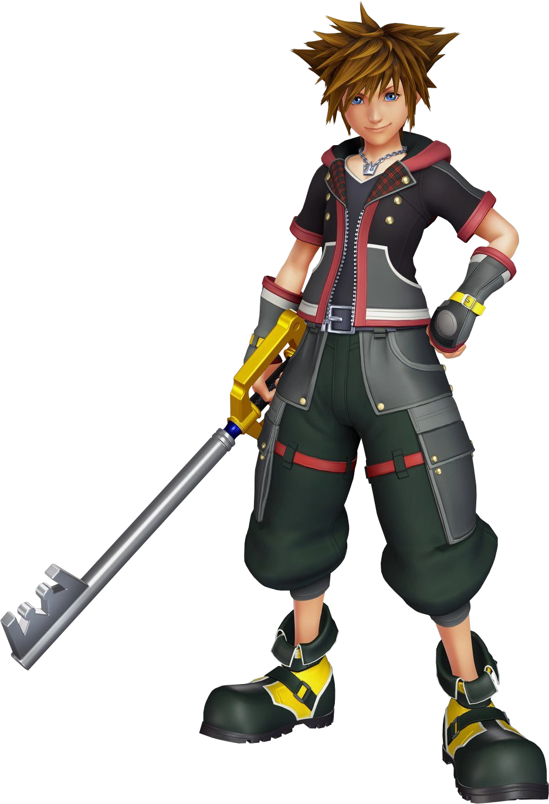
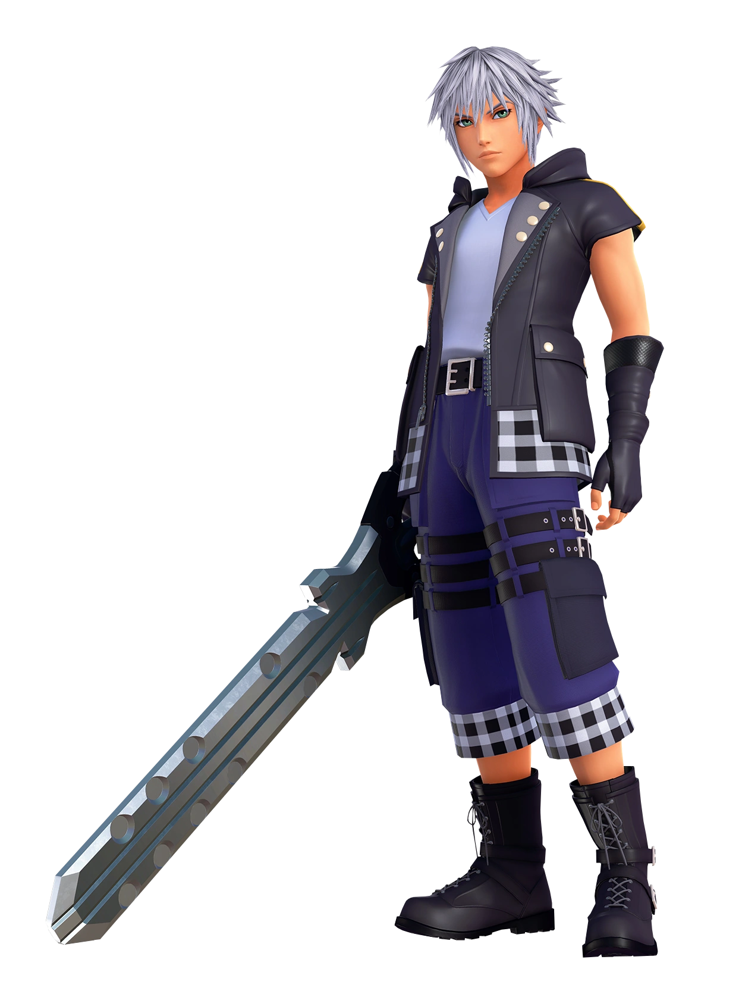
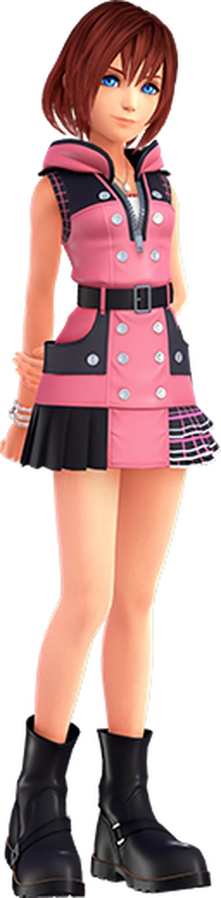
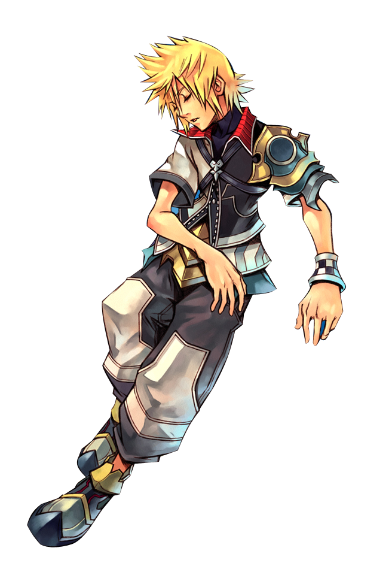
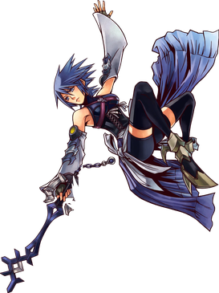
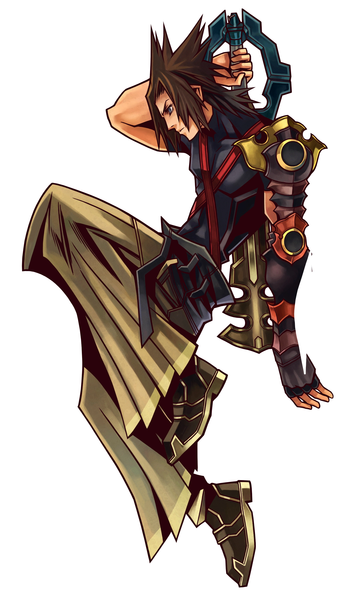
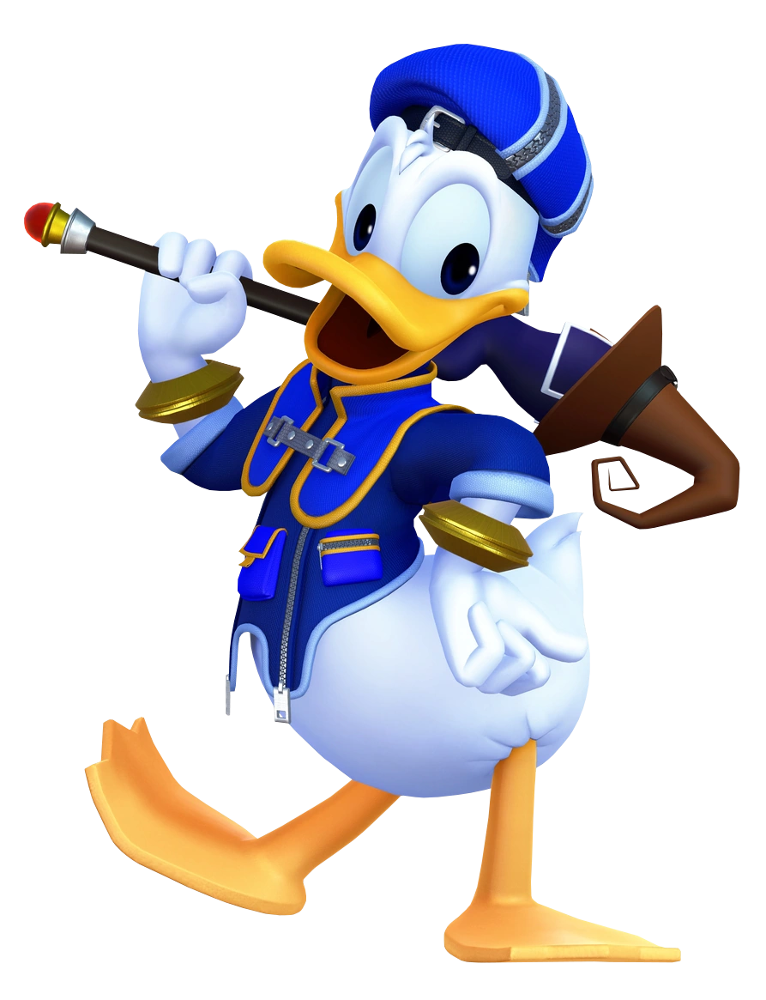
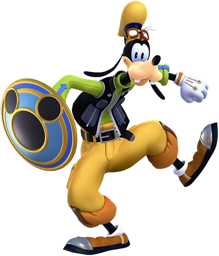
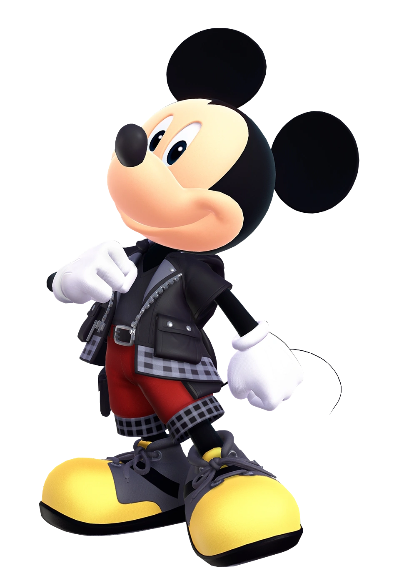
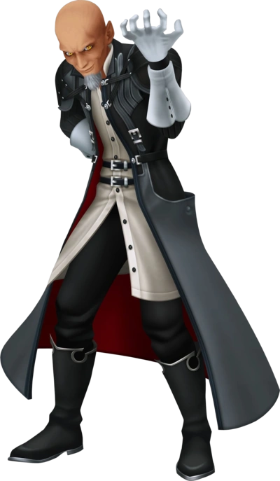

Sora
Arma: Kingdom Key
Portador de la Keyblade, optimista y valiente. Su mayor fuerza es el vínculo con sus amigos.
En un universo conectado por puertas y mundos, la oscuridad devora corazones y rompe el equilibrio. Sora, elegido por la Keyblade, emprende un viaje para restaurar la luz, encontrar a sus amigos y cerrar los caminos a la oscuridad. Entre aliados inesperados y enemigos que manipulan el destino, cada decisión revela que el verdadero poder nace del corazón.
Proximo juego de la saga
Estos son algunos de los personajes principales de la historia asi como su arma principal.









